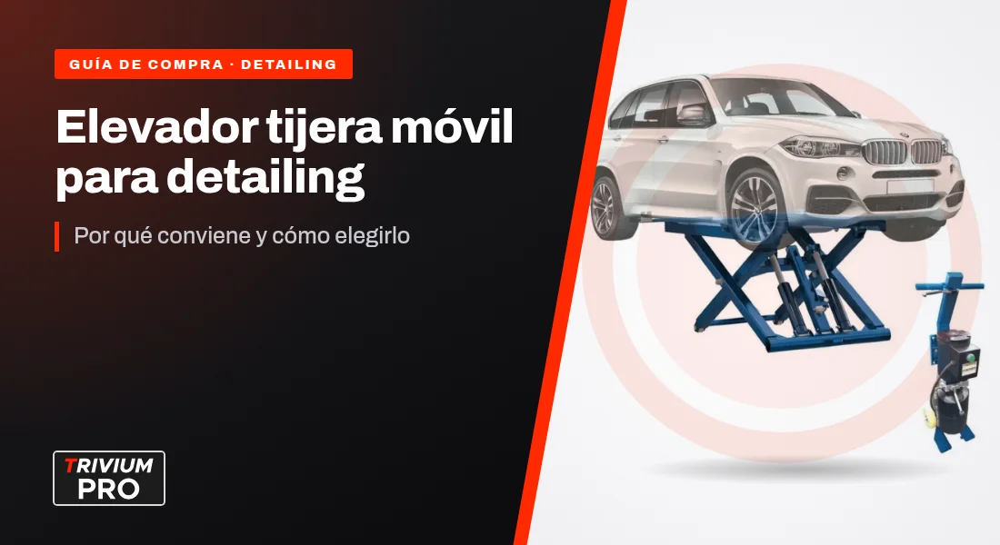

Elevadores
Elevadores Alineadoras
Alineadoras Balanceadoras
Balanceadoras Desarmadoras
Desarmadoras
En resumen: un elevador tijera móvil permite levantar el auto a una altura cómoda para trabajar sobre llantas, estribos y bajos sin agacharse, no necesita obra civil y se puede mover para liberar el espacio. Por eso es una de las herramientas más apreciadas en un taller de detailing, de lavado y de estética automotor.
Por qué un elevador móvil es ideal para detailing
En detailing se trabaja durante horas sobre superficies que están cerca del piso: llantas, pasos de rueda, estribos, paragolpes y parte baja de las puertas. Con el auto en el piso, el operario trabaja agachado o de rodillas, lo que cansa y baja la calidad de la terminación. Con un elevador de media altura:
- Trabajás a una altura cómoda en las zonas bajas del vehículo.
- Accedés a los bajos y a las llantas para limpiar, tratar y proteger.
- Tenés las ruedas libres para lavarlas, descontaminarlas o sacarlas.
- Liberás el espacio: al ser móvil o portátil, no ocupa un puesto fijo cuando no lo usás.
Qué medidas mirar antes de comprar
| Dato | Por qué importa |
|---|---|
| Capacidad | Tiene que superar el peso de las camionetas y SUV que recibas, con margen. |
| Altura de elevación | Define qué tan arriba queda el vehículo; los de media altura alcanzan para trabajar sobre llantas y zonas bajas. |
| Largo de las plataformas | Tiene que cubrir la distancia entre ejes de los vehículos habituales. |
| Movilidad | Si vas a moverlo entre puestos o guardarlo, mirá que sea portátil. |
| Seguridad | Bloqueos mecánicos en varias posiciones y válvulas de seguridad. |
| Alimentación | Conviene confirmar el tipo de energía que usa y que tu local la tenga. |
Modelos portátiles de nuestro catálogo
- Elevador tijera portátil PL-B30M: 3.000 kg de capacidad, plataforma de 1.870 mm, elevación hasta 980 mm y triple sistema de seguridad (bloqueo hidráulico, cerradura neumática y dispositivo mecánico de doble garra).
- Rotary Lift PRO 6MR: 2.722 kg, portátil de media altura, llega a su altura máxima en menos de 30 segundos, con 7 posiciones de bloqueo y adaptadores de altura adicionales.
Otras opciones de la misma familia (sobrepiso, empotrables, baja altura) están comparadas en elevador tijera: tipos, capacidades y cuál elegir. Para sumar servicios de neumáticos, mirá también rotación de neumáticos.
Otros usos del mismo elevador
- Neumáticos y frenos: rotación, cambio de pastillas, inspección.
- Lavado de bajos y tratamientos de protección.
- Lubricación y revisiones rápidas en talleres con poco espacio.
Si además querés armar el taller completo, mirá cómo montar un taller de detailing. La instalación y puesta en marcha se cotizan aparte.
Equipamiento relacionado
¿Querés armar el presupuesto de equipamiento? Pedí una cotización y te asesoramos según tu local, tus vehículos y tu presupuesto. La instalación se cotiza aparte.
Preguntas frecuentes
¿Qué elevador conviene para un taller de detailing?
Un elevador tijera portátil de media altura: permite trabajar cómodo sobre llantas y bajos, no necesita obra civil y se puede mover para liberar espacio.
¿Qué capacidad necesita un elevador para detailing?
La suficiente para tus vehículos más pesados, con margen. Los modelos de 2.722 y 3.000 kg cubren autos y la mayoría de las camionetas; para SUV más pesadas conviene mirar capacidades mayores.
¿Un elevador tijera móvil necesita obra civil?
No: los modelos portátiles se apoyan sobre el piso. Igual conviene que el piso esté nivelado y en buen estado.
¿El elevador móvil sirve para otros trabajos?
Sí: neumáticos, frenos, lubricación y revisiones rápidas. Es un elevador versátil para talleres con poco espacio.